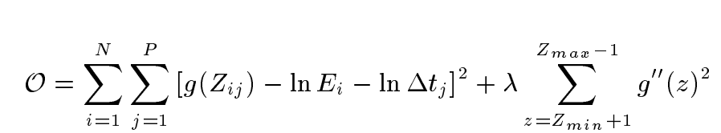
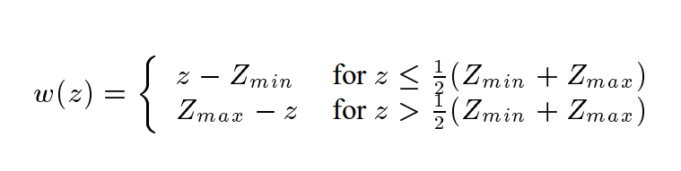

Camera Response Curve Reconstruct
We need to reconstruct the camera response curve in order to quickly
convert pixel values to relative radiace to produce the HDR image.
For implementation of camera response curve reconstruction, I first sample points evenly over the images, get the value of each of the RGB channel and construct matrix correspondingly. For each photo, we also need the exposure time in order to correctly calculate the response curve. According to the equation below

With the sampled data and the robust SVD algorithm of numpy, we could calculate a data-fitting equation for the response curve, which will be used as g term in Debevec's paper.
Curve Obtained
By executing the algorithm stated above, I got a response curve of an image and the curve include three components, each of the three RGB channels.
Radiance Mapping
Now we have the g function recovered, we need to find a way to calculate the radiance for each pixel on our HDR image. The equation (6) in Debevec's paper tells us how to compute the result:

We could simply reuse the weight function that we used in the camera response recovery procedure for better accuracy, where

The procedure for mapping is to split the bgr channels for each images in the image sequence, also setting up a look up table for the weight (array of 256 integers) so the compute could be faster. For each image, we first look up each pixel value into the value in g function table. With help from the multiply function of numpy and LUT function of openCV, we could quickly compute the result for each image, and weight each pixel according to the weight table.
Radiance Heat Map
I converted the mapped radiance into a heat map to visualize the region with high radiance and low radiance mapping.
Radiance Mapped HDR image on OpenHDR
We could see that the radiance mapped image has a wide dynamic range so it could present details at low-light region, but also could preserve detail at bright area. Now we need to consider proper tone mapping technique for a better looking image.